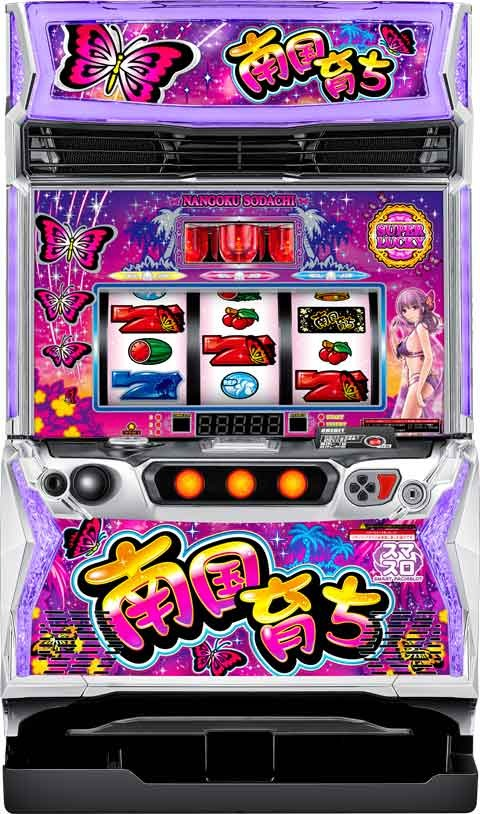

L南国育ち

 狙い目
狙い目
【スルー別リセット狙い】
140Gから200Gまで
0スルー 560G
1スルー
前回200Gで当選 280G
前回200G以内 380G
前回200G以上 450G
2スルー 500G
3スルー 330G
4スルー
超積極派 100Gから飛翔まで
積極派&慎重派 530G
5スルー以降
超積極派 飛翔まで
積極派 120Gまたは飛翔まで
慎重派 180G
20%で朝イチはチャンスモード。
チャンスモード当選後は通常B以上なので朝イチ早い初当たりは浅めから打てそう。
【スルー別ボーナス間天井狙い】
※下記の狙い目に差枚(0スルー)や飛翔間ハマり(1スルー以降)などを考慮してボーダー調整。
※偶数連後、奇数連後どちらか判断つかない場合は、基本的に辛い方に合わせた狙い目が望ましい。
0スルー
偶数連後 660G
奇数連後 800G
1スルー
偶数連後 650G
奇数連後 650G
2スルー
偶数連後 620G
奇数連後 580G
3スルー
偶数連後 480G
奇数連後 340G
4スルー
偶数連後
積極派 250G
慎重派 310G
奇数連後
積極派 飛翔まで
慎重派 180G
5スルー以降
偶数連後
超積極派 0G or 飛翔まで
積極派 180G
慎重派 270G
奇数連後
積極派 0G or 飛翔まで
慎重派 150G
【ゾーン狙い】
※前任者のペナ打ちも考慮して201-203Gまで回した方が良さそう。
飛翔後の引き戻し狙い
奇数連後 180Gから200Gまで
偶数連後 90Gから200Gまで
奇数連、偶数連の見分け方
※どちらかハッキリしない、または履歴から偶奇を想定する場合は各自ボーダー調整。
例えば偶数連後っぽいなら偶数連後で10G-20Gボーダー上げる等。
【有利区間差枚でのボーダー】
差枚がプラスだと冷遇傾向。
差枚で天井狙いのボーダー調整する。
0スルー時は差枚でボーダー調整。
1スルー以降は飛翔間でボーダー調整。差枚も意識した方が良いだろうけど細かくなるので自己判断で。
差枚+1000枚以上 +80G
差枚+0枚以上 +20G
差枚-2000枚以上 -20G
差枚-2000枚未満 -60G
【飛翔間ハマりG数でのボーダー】
飛翔間がハマるほど甘くなる傾向。飛翔間ハマりG数でボーダー調整。
飛翔間
400G以内 +20G
401Gから700G以内 -30G
701Gから1000G以内 -60G
1001G以上 -100G
【モードB狙い】
モードB確定で機械割は105%前後。
機械割の目安
32Gから 103-104%
200Gから 105-106%
300Gから 107-108%
【必翔モード後の狙い目】
200のゾーン狙いは90Gから
天井狙いは300Gから
やめ時
32Gのときめきゾーンを消化してやめ。
飛翔まで追う場合は飛翔確認後ときめきゾーン消化してやめ。
攻めたやめ時
天国後の引き戻し狙いで200or201Gで当選した場合は、バタフライゾーン抜けたらやめ。(ときめきゾーン消化しないで1Gやめ)
参考元
基本情報
- メーカー: オリンピアエステート
- 機械割: 97.7% 〜 110.0%
- 導入開始日: 2024年03月04日（月）
- ゲーム性概要: シリーズ伝統のゲーム性を踏襲して、『南国育ち』がスマスロで登場する。 通常時はキュイン音とともにパトランプが光ればボーナス確定というおなじみのゲーム性。レア役成立でボーナスのチャンスとなる。 ボーナスは青BIG（約240枚）、赤BIG（約230枚）、REG（約85枚）の3種類あり、青BIGはBIGの1G連が確定。ボーナス中のレア役はBIGの1G連を抽選する。ボーナス終盤のバタフライゾーン（8G）で蝶が飛べばボーナス1G連をゲット。バタフライゾーンでボーナス非当選でも、新搭載の（超）ときめきゾーン（32G）へ移行するのでボーナスのチャンスは継続する。ループ率約93%の蝶飛翔モードも搭載！


打ち方
打ち方・小役
通常時の打ち方（小役狙い）
「最初に狙う絵柄」

左リール上段付近にBARを狙う。左リール上段にスイカ停止時以外は、中＆右リールはフリー打ちでOKだ。
「スイカ停止時」
成立役…スイカ

スイカは平行（3枚）と右下がり（リプレイ）の2種類のフラグが存在。リプレイフラグは取りこぼさないので、中リールをフリー打ちし、スイカが上段にテンパイしたら右リールは青7を目安にスイカを狙おう。
「レア役の停止形」

ボーナス中の打ち方
「基本はナビ通りに押せばOK」

ナビなし時は通常時と同様の左リールBAR狙いで消化しよう。
変則押しはNG
通常時は左リール第1停止での消化を推奨する。
解析情報通常時
小役関連
レア役確率
| 役 | 確率 |
|---|---|
| チェリー | 1/50.0 |
| スイカ | 1/128.0 |
| レア役合算 | 1/36.0 |
引き戻し・チャンス・初代
| 設定 | チェリー | スイカ |
|---|---|---|
| 全設定共通 | 6.3% | 12.6% |
スイカ契機のボーナスは赤7BIG以上が確定する。
モード
モード概要
通常時は滞在モードに応じてボーナス当選確率や天井ゲーム数、ボーナス当選時の移行先が変化。
飛翔モード（連チャンモード）は3種類あり、基本的には飛翔Aと飛翔Bがループすることで連チャンが継続していく。
通常時のモード概要
| モード | 特徴 | 天井 |
|---|---|---|
| 通常A | 約50%で通常Bor飛翔モードへ移行 | 996G |
| 通常B | 約50%で飛翔モードへ移行 飛翔モード突入まで転落ナシ | 996G |
| 引き戻し | 約56%で通常Bor飛翔モードへ移行 | 200G |
| チャンス | 設定変更後のみ移行 飛翔モードへ移行しなかった場合は通常Bへ | 200G |
| 必翔 | 有利区間再突入時に移行する可能性あり ボーナス当選で飛翔モード移行確定 | 32G |
| 初代 | 初当り確率が高く、単発・約3連を繰り返す | 調査中 |
| 初代 | 高設定ほど入りやすく抜けにくいのが特徴で 滞在中の設定6の機械割は110.5% （設定1でも機械割は100%を超える） | 調査中 |
飛翔モード（連チャンモード）概要
| モード | 特徴 | 天井 |
|---|---|---|
| 飛翔A | 約85%で飛翔Bへ移行 | 32G |
| 飛翔B | 約75%で飛翔Aへ移行 | 32G |
| 超飛翔 | 約93%で超飛翔をループ | 32G |
| 超飛翔 | 突入確率は約1/35000 | 32G |
※1G連ストック、青7BIG、先飛翔赤7BIG、ときめきゾーンでの連チャン時も飛翔AとBの移行抽選はおこなわれる
有利区間移行時・モード振り分け
| モード | 設定変更時 | 設定変更時以外 |
|---|---|---|
| 通常A | 30.0% | ー |
| 通常B | 50.0% | 20.0% |
| チャンス | 20.0% | ー |
| 必翔 | ー | 80.0% |
飛翔モード終了時のモード移行先
| 滞在モード | 移行先 |
|---|---|
| 飛翔A終了時 | 約75%で通常Bor引き戻しへ |
| 飛翔B終了時 | 約50%で通常Bor引き戻しへ |
| 超飛翔終了時 | 約75%で通常Bor引き戻しへ |
| 必翔経由の飛翔終了時 | 必ず通常Bor引き戻しへ |
※飛翔A終了時…おもに偶数連での終了時、飛翔B終了時…おもに奇数連での終了時 ※必翔経由…必翔突入契機が有利区間リセット後のため、基本的には大量出玉獲得後
飛翔モード以外からのモード移行率（ボーナス当選時）
| 滞在モード | 通常Aへ | 通常Bへ | 飛翔へ | 超飛翔へ |
|---|---|---|---|---|
| 通常A | 50.0% | 40.0% | 9.8% | 0.2% |
| 通常B | ー | 50.0% | 49.8% | 0.2% |
| 引き戻し | 44.0% | 40.0% | 15.8% | 0.2% |
| チャンス | ー | 75.0% | 24.8% | 0.2% |
| 必翔 | ー | ー | 95.0% | 5.0% |
演出動画
ロングフリーズ
ロングフリーズ発生時は、青7BIG＋超飛翔モードへの昇格が確定。擬似遊技で中段チェリーが停止するパターンもある。
フリーズ
ロングフリーズ

超ときめきゾーン中のボーナス当選時の一部などで発生。青7BIG＋超飛翔モードへの昇格が確定する。
超飛翔モード移行時・ロングフリーズ発生率
| 超飛翔モード移行契機 | 発生率 |
|---|---|
| 必翔モード経由 | 10.2% |
| 上記以外 | 90.2% |
ロングフリーズ発生確率＆期待獲得枚数
| 項目 | 内容 |
|---|---|
| トータル確率 | 約1/46000 |
| 期待獲得枚数 | 2500枚以上 |
解析情報ボーナス時
ボーナス共通
モードごとのボーナス確率
| 設定 | 通常A | 通常B | 初代 |
|---|---|---|---|
| 1 | 1/331.6 | 1/331.6 | 1/160.0 |
| 2 | 1/322.1 | 1/322.1 | 1/160.0 |
| 3 | 1/298.1 | 1/298.1 | 1/160.0 |
| 5 | 1/272.7 | 1/272.7 | 1/160.0 |
| 6 | 1/250.7 | 1/250.7 | 1/160.0 |
| 設定 | 引き戻し | チャンス | 合算 |
| 1 | 1/131.7 | 1/106.1 | 1/299.8 |
| 2 | 1/131.7 | 1/106.1 | 1/291.0 |
| 3 | 1/131.7 | 1/106.1 | 1/267.3 |
| 5 | 1/131.7 | 1/106.1 | 1/238.6 |
| 6 | 1/131.7 | 1/106.1 | 1/208.8 |
ボーナス当選時のBIG・REG割合
| 設定 | 全状態の平均 | 飛翔モード中 | ||
|---|---|---|---|---|
| 設定 | BIG | REG | BIG | REG |
| 1 | 53.4% | 46.6% | 56.7% | 43.3% |
| 2 | 53.4% | 46.6% | 56.7% | 43.3% |
| 3 | 53.4% | 46.6% | 56.7% | 43.3% |
| 5 | 54.1% | 45.9% | 56.7% | 43.3% |
| 6 | 55.3% | 44.7% | 56.7% | 43.3% |
1G連ストック当選率
ボーナス中はレア役で1G連ストックを抽選していて、当選時は次ゲームのレバーON時に蝶ランプが光って告知。ロングフリーズ経由の青7BIG時はレア役以外でも1G連ストックが抽選される。ストックあり（青7BIG当選時など含む）時はバタフライゾーンへ移行せず、即次のボーナスが始まる。
ボーナス中・1G連ストック当選率 初当りボーナス中（※）
| 役 | 当選率 |
|---|---|
| レア役以外 | ー |
| チェリー | 0.5% |
| スイカ | 1.5% |
連チャン中のボーナス中
| 役 | 当選率 |
|---|---|
| レア役以外 | ー |
| チェリー | 1.0% |
| スイカ | 3.1% |
ロングフリーズ経由の青7BIG中
| 役 | 当選率 |
|---|---|
| レア役以外 | 1.6% |
| チェリー | 50.0% |
| スイカ | 50.0% |
※初当りボーナス中は当選率が低い代わりに当選＝飛翔モード移行確定
ボーナス（BIG・REG）
ボーナス概要

消化中はレア役でBIG1G連ストック抽選をおこない、蝶が飛べば1G連確定。滞在モードに応じた連チャン抽選もおこなわれていて、 ラスト8G間のバタフライゾーン で蝶が飛べば1G連が確定する。ボーナス中（バタフライゾーン含む）に告知が発生しなくても、ボーナス当選時の一部はボーナス後32G間の（蝶）ときめきゾーンで告知される。
ボーナス性能
| 項目 | 青BIG | 赤BIG | REG |
|---|---|---|---|
| 獲得枚数 | 約240枚 | 約230枚 | 約85枚 |
| ループ率 | モードごとに変化 最高ループ率は約93%（超飛翔モード） | ||
| 消化中の抽選 | レア役でBIG1G連ストックを抽選 | ||
| その他 | BIG1G連濃厚 | ー | ー |
「SUPER LUCKYランプ」

SUPER LUCKYランプ点灯で、超飛翔モード濃厚！
バタフライゾーン
バタフライゾーン概要

ボーナスのラスト8Gで移行する連チャン告知状態（押し順ナビは非発生）。終了までに蝶が飛べば1G連が確定する。
ボーナス告知タイミング
連チャンをバタフライゾーンで告知する場合、何ゲーム目で告知されるかも抽選で決定。飛翔モードかつバタフライゾーン中の告知ゲーム数決定時に、 次次回までの連チャンが確定する特殊抽選 もおこなわれる。
バタフライゾーンの連チャン告知タイミング振り分け
| タイミング | 振り分け |
|---|---|
| 1G目 | 10.0% |
| 2G目 | 10.0% |
| 3G目 | 10.0% |
| 4G目 | 10.0% |
| 5G目 | 10.0% |
| 6G目 | 10.0% |
| 7G目 | 10.0% |
| 8G目 | 20.0% |
| 逆転 | 10.0% |
連チャン時・特殊抽選当選率
| モード | 当選率 |
|---|---|
| 飛翔A | 3.1% |
| 飛翔B | 3.1% |
| 超飛翔 | 3.1% |
※特殊抽選当選で次次回までの連チャンが確定
特殊抽選当選時は、蝶が赤く光るなどの確定演出が発生する可能性あり。
（超）ときめきゾーン
ときめきゾーン概要

バタフライゾーン終了後、32G間がときめきゾーン。基本的に連チャン時はボーナス中かバタフライゾーンで告知されるが、一部がときめきゾーンまで持ち越される。 筐体右側の紫織ランプが赤く点灯すれば、 32G以内の連チャン濃厚かつ、超飛翔モード移行に期待できる超ときめきゾーン だ。
「超ときめきゾーン（紫織ランプ赤点灯）」

（超）ときめきゾーン中・ボーナス当選率 （ときめきゾーンは内部的に飛翔モード以上の場合の数値）
| 役 | ときめきゾーン | 超ときめきゾーン |
|---|---|---|
| チェリー | 6.3% | 12.6% |
| スイカ | 12.6% | 25.0% |
超飛翔モード昇格率
超ときめきゾーン中のボーナス当選時に、超飛翔モードへの昇格を抽選。 レア役で当選した場合は1/2で昇格 となるのでアツい。さらに、当選時の一部でロングフリーズが発生する。ロングフリーズ当選時の50.0%で中段チェリー（擬似遊技）が停止。
超ときめきゾーン中のボーナス当選時 超飛翔モード昇格率
| 役 | 昇格率 |
|---|---|
| レア役以外 | 25.0% |
| レア役 | 50.0% |
超飛翔モード昇格時・ロングフリーズ発生率
| ロングフリーズ | 発生率 |
|---|---|
| 発生 | 90.2% |
超ときめきゾーン移行率
ボーナス開始時のモードを参照して、ボーナス終了時に超ときめきゾーンへ移行するかを抽選する（飛翔モードが継続＝連チャン確定の場合に抽選）。
ボーナス開始時・超ときめきゾーン移行率
| モード | 移行率 |
|---|---|
| 飛翔A→飛翔Bへの継続時 | 1.0% |
| 飛翔B→飛翔Aへの継続時 | 5.0% |
ボーナス共通
連チャン告知タイミング
ボーナス開始時に飛翔モードによる連チャンをバタフライゾーンで告知するか、その後のときめきゾーンで告知するかを抽選していて、約80%はバタフライゾーンで告知。
飛翔モード突入後は最低でも1回は 蝶ランプ点灯による1G連が発生するまで飛翔モードが継続する 仕様のため、32G以内にボーナスに当選して即終了したとしても、蝶ランプ点灯で1G連が告知されていなければ飛翔モードへは移行していなかったことになる。
連チャン告知タイミング振り分け
| タイミング | 振り分け |
|---|---|
| バタフライゾーン | 80.1% |
| ときめきゾーン | 19.9% |
演出情報
通常時
違和感演出のパターン（一部）
| 演出 | 違和感 |
|---|---|
| リール停止音 | 予告音ナシでプリプリ音が鳴る |
| リール停止音 | リール停止音がいつもと違う など |
| 下パネル | 点滅 |
| 蝶ランプ | 一瞬点灯 |
| シークレット蝶ランプ | 点灯 |
| パト部屋 | レインボー点灯 |
停止音が違う、各ランプが一瞬点灯・消灯など違和感系の演出はボーナス濃厚だ。
［シークレット蝶ランプ］

蝶ランプの下にいる蝶がひっそりと点灯！
［パト部屋］

パトランプの背景部分が虹色に光れば!?
プリリプ

プリリプ（予告音＋リプレイ停止時の停止音変化）はボーナス期待度約50%。第3停止ボタンを長押しするとボーナス当選時の一部でCHANCEランプが点灯する。長押し時にVボタンが開いたり、バイブが発生すればさらなる恩恵が!?
通常時・ときめきゾーン共通の演出法則1
| 演出 | 法則 | |
|---|---|---|
| 特殊 テンパイ音 | ドゥルリ | BIG確定 |
| 特殊 テンパイ音 | BIG入賞ジングルの一部 | BIG＋飛翔確定 |
| 特殊 テンパイ音 | 超ラッキー | BIG＋飛翔＋飛翔SP確定 |
| 予告音発生でリプレイ・レア役を否定 | ボーナス確定 | |
| クイックキュイン | BIG確定 | |
| リバーブキュイン | BIG確定 | |
| やまびこキュイン | BIG確定 | |
| 線香花火キュイン | BIG確定 | |
| 流れ星キュイン | BIG確定 | |
| 逆回転キュイン | BIG確定 | |
| チャンスランプ消灯キュイン | BIG確定 | |
| パトランプロング回転キュイン | BIG確定 | |
| 第1停止キュイン（※） | BIG確定 | |
| 予告音＋第1停止キュイン（※） | BIG確定 | |
| SPウェイトキュイン | BIG＋飛翔確定 | |
| 超SPウェイトキュイン | 青BIG＋飛翔確定 | |
| 337拍子キュイン | BIG＋飛翔確定 | |
| 上下パネル消灯キュイン | BIG＋飛翔確定 | |
| Vボタンバイブキュイン | BIG＋飛翔確定 | |
| ハルルナキュイン | BIG＋飛翔確定 | |
| レッドフラッシュキュイン | 赤BIG＋飛翔確定 | |
| 7セグ赤777キュイン | 赤BIG＋飛翔確定 | |
| ブルーフラッシュキュイン | 青BIG＋飛翔確定 | |
| 7セグ青777キュイン | 青BIG＋飛翔確定 | |
| SPラッキーランプ点灯キュイン | BIG＋飛翔＋飛翔SP確定 | |
| BIG入賞時蝶ランプ点灯 | BIG1G連確定 | |
| 赤7BIG入賞時・初代青BIGジングル発生 | 飛翔確定 | |
| 遅れ（大） | BIG＋飛翔確定 |
※ボーナス後1G目or32G目限定で発生
通常時・ときめきゾーン共通の演出法則2
| 演出 | 法則 | |
|---|---|---|
| 予告音 （※） | パトランプ瞬き | ボーナス確定 |
| 予告音 （※） | キュイン音発生 | BIG確定 |
| 予告音 （※） | 下パネル高速点滅 | BIG確定 |
| 予告音 （※） | 無灯パトランプ瞬き | BIG確定 |
| 予告音 （※） | 蝶ランプ瞬き | BIG＋飛翔確定 |
| 予告音 （※） | シークレットランプ点灯 | BIG＋飛翔確定 |
| 予告音 （※） | パトランプ部屋虹 | BIG＋飛翔確定 |
| 予告音 （※） | さざ波フラッシュ | BIG＋飛翔確定 |
| 予告音＋ プリリプ （※） | 変則停止音あおり | ボーナス確定 |
| 予告音＋ プリリプ （※） | チャンスランプ点灯 | ボーナス確定 |
| 予告音＋ プリリプ （※） | 第3停止をねじって チャンスランプ点灯 | ボーナス確定 |
| 予告音＋ プリリプ （※） | チャンスランプ点灯＋バイブ | BIG確定 |
| 予告音＋ プリリプ （※） | 第3停止をねじって チャンスランプ点灯＋バイブ | BIG確定 |
| 予告音＋ プリリプ （※） | 確定あおり音 | BIG確定 |
| 予告音＋ プリリプ （※） | 蝶ランプ瞬き | BIG＋飛翔確定 |
| 予告音＋ プリリプ （※） | シークレットランプ点灯 | BIG＋飛翔確定 |
| 予告音＋ プリリプ （※） | パト部屋虹 | BIG＋飛翔確定 |
| パトランプ 瞬き | 第1停止時～第3停止後 | ボーナス確定 |
| パトランプ 瞬き | 第1＋第2停止時 | BIG確定 |
| パトランプ 瞬き | 第2＋第3停止時 | BIG確定 |
| パトランプ 瞬き | 全リール停止時 | BIG＋飛翔確定 |
| パトランプ 瞬き | 第3停止後無灯パトランプ瞬き | BIG確定 |
| 第3停止後ロゴランプ点滅 | ボーナス確定 | |
| 第3停止後7セグ点滅 | ボーナス確定 | |
| 第3停止後7セグ「759」が虹で表示 | BIG＋飛翔確定 | |
| 第3停止後Vボタンオープン | フリーズ発生 | |
| 予告音ナシでプリリプ | ボーナス確定 | |
| レバーON時or第3停止後パトランプ瞬き | ボーナス確定 | |
| レバーON時or第3停止後無灯パトランプ瞬き | BIG確定 | |
| 第3停止後キュイン音発生 | BIG確定 | |
| 第3停止後下パネル高速点滅 | BIG確定 | |
| スタート音が無音 | BIG＋飛翔確定 | |
| 停止音が無音 | BIG＋飛翔確定 | |
| レバーON時or第3停止後蝶ランプ瞬き | BIG＋飛翔確定 | |
| 第3停止後シークレットランプ点灯 | BIG＋飛翔確定 | |
| 第3停止後パト部屋虹 | BIG＋飛翔確定 |
※…変則停止音あおりを除き第3停止後に演出が発生
通常時限定の演出法則
| 演出 | 法則 |
|---|---|
| 遅れ（中） | 通常B中のボーナス確定 |
| リプレイ入賞時特殊フラッシュ | 通常B確定 |
| リプレイ入賞時フラッシュなし | BIG＋飛翔確定 |
［759虹表示］

［Vボタンオープン］

ボーナス（BIG・REG）
ボーナス中の演出法則
| 演出 | 法則 | |
|---|---|---|
| 予告音 | リール回転開始時に発生 | レア役対応 |
| 予告音 | レバーON時に発生 | BIGストックのチャンス |
| 予告音 | 確定予告音 | BIGストック確定 |
| 予告音 | 第3停止後に 「バタフラーイ」 | BIGストック確定 |
| ナビ系 | ハルルナナビ | 飛翔＋次回BIG確定 |
| 確定バタフライゾーン突入 | 飛翔＋次回BIG確定 |
ボーナス終了時の演出法則
| 演出 | 法則 |
|---|---|
| 上パネルフラッシュ | 通常Bor飛翔期待度アップ |
| 上下パネルフラッシュ | 通常Bor飛翔確定 |
| 蝶ランプ瞬き | 逆転飛翔＋BIG確定 |
バタフライゾーン
バタフライゾーン中の演出法則
| 演出 | 法則 | |
|---|---|---|
| 違和感演出 （※） | プリリプ | 飛翔確定 |
| 違和感演出 （※） | ロゴランプ点滅 | 飛翔確定 |
| 違和感演出 （※） | 下パネル消灯 | 飛翔＋次回BIG確定 |
| 違和感演出 （※） | 蝶ランプ瞬き | 飛翔＋次回BIG確定 |
| 違和感演出 （※） | 残りゲーム数表示が虹 | 飛翔＋次回BIG確定 |
| 違和感演出 （※） | シークレットランプ点灯 | 飛翔＋次回BIG確定 |
| 違和感演出 （※） | 全消灯＋BGM停止 | 飛翔＋次回BIG確定 |
| 違和感演出 （※） | パトランプ部屋虹 | 飛翔＋次回BIG確定 |
| 飛翔告知 | 通常飛翔 | ボーナス確定 |
| 飛翔告知 | 遅れ飛翔 | BIG確定 |
| 飛翔告知 | 赤飛翔 | 飛翔＋次回BIG確定 |
| 飛翔告知 | 逆飛翔 | 飛翔＋次回BIG確定 |
| 飛翔告知 | バイブ飛翔 | 飛翔＋次回BIG確定 |
| 飛翔告知 | 2回飛翔 | 飛翔＋次回BIG確定 |
| 飛翔告知 | 4匹飛翔 | 飛翔＋次回BIG確定 |
※…プリリプを除き第3停止後に演出が発生
（超）ときめきゾーン
ときめきゾーン中限定の演出法則
| 演出 | 法則 |
|---|---|
| 遅れ（小） | 32G以内のボーナス確定 |
| ボーナス後1G目に紫織ランプ赤点灯 | 超ときめきゾーン確定 |
| ボーナス後1～20G目に紫織ランプ消灯 | BIG＋飛翔確定 |